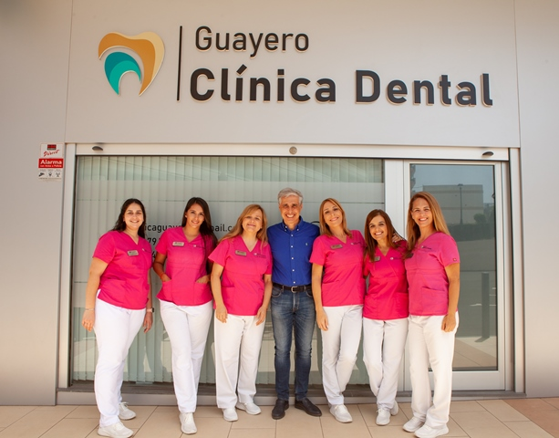

Tu dentista en Los Cristianos
Cuidar tu boca empieza por conocer su estado. En Clínica Dental Guayero realizamos revisiones, limpiezas dentales, empastes y reconstrucciones, con una atención cercana y un plan explicado antes de comenzar. Desde 1999 en el centro de Los Cristianos, para pacientes de Arona y todo el sur de Tenerife.
Pide tu revisión dental922 79 74 05
La odontología general reúne la prevención, el diagnóstico y el tratamiento de problemas habituales de la boca. En nuestra clínica de Los Cristianos te ayudamos a organizar los cuidados que necesitas y a resolver tus dudas sobre tu salud bucodental.
¿Dolor de muelas o un diente roto?
Si tienes dolor, inflamación o se te ha roto un diente, una corona o un empaste, llámanos al 922 79 74 05 y te daremos cita lo antes posible para valorar qué ocurre y aliviar las molestias.
Atendemos a vecinos de Los Cristianos, Arona, Playa de las Américas y Adeje, y también a residentes extranjeros y visitantes que pasan unos días en el sur de Tenerife.
Diagnóstico completo en una sola clínica
En Guayero contamos con radiología dental 3D (GENDEX GXDP-700) y escáner intraoral, de modo que las pruebas que necesites se hacen en la propia clínica, sin desplazamientos.
Si tras la revisión necesitas un tratamiento especializado, como endodoncia, periodoncia, implantes dentales u ortodoncia invisible, lo realiza el mismo equipo.
Revisiones dentales y prevención
Una revisión permite explorar los dientes, las encías y los tejidos de la boca, incluso cuando no hay molestias. También es el momento de comentar cambios que hayas notado, tus antecedentes y tus hábitos de higiene.
Según los hallazgos, te explicaremos si hace falta alguna prueba o tratamiento. La frecuencia de las siguientes revisiones se adapta a tu situación y a tu riesgo de desarrollar problemas.
Tratamiento de caries
La caries puede avanzar sin dolor en sus primeras fases. Una mancha, sensibilidad o una cavidad son motivos para consultar, pero el diagnóstico requiere una exploración.
El tratamiento depende de la profundidad y la extensión de la lesión. Algunas lesiones iniciales pueden controlarse con medidas preventivas; cuando hay una cavidad, puede ser necesario restaurar el diente. Si está afectada la pulpa, valoramos si necesita tratamiento de conductos.
Empastes dentales
El empaste restaura la zona de un diente dañada por caries. Tras valorar y tratar el tejido afectado, se coloca el material indicado y se comprueba cómo encaja la restauración al morder.
Antes de empezar te explicaremos el procedimiento y los cuidados posteriores. Si notas una molestia al masticar o que un empaste antiguo se ha roto, pide una revisión para conocer la causa.
Reconstrucciones dentales
Cuando falta una parte mayor del diente por caries, desgaste o fractura, estudiamos cómo recuperar su forma y función. La cantidad de tejido sano que conserve ayuda a decidir qué restauración es adecuada.
En algunos casos puede ser necesaria una protección adicional, como una corona. Puedes conocer estas opciones en nuestra página de prótesis dentales.
Limpieza dental profesional
La limpieza profesional permite eliminar depósitos de sarro y placa que necesitan atención en consulta. Se complementa con la higiene diaria y con recomendaciones adaptadas a tu boca.
Si hay sangrado o inflamación persistente, revisamos las encías para saber si hace falta un tratamiento específico. Una limpieza no sustituye la atención de una enfermedad periodontal; consulta también nuestro servicio de periodoncia.
Un plan que puedas entender
Después de la exploración te explicaremos qué hemos encontrado, qué conviene atender primero y las opciones disponibles. El presupuesto y las fases del tratamiento se comentan antes de comenzar.
Si hace tiempo que no vienes al dentista o te preocupa la consulta, cuéntanoslo al pedir cita. Podemos empezar por conocer tus necesidades y resolver tus dudas.

Dentistas en Los Cristianos desde hace más de 20 años
En Guayero ponemos a tu disposición una atención que conecta la revisión general con las distintas áreas de la odontología. La valoración inicial permite orientar los siguientes pasos según tu caso.
Para los más pequeños contamos con atención de odontopediatría en Los Cristianos, adaptada a la infancia y a las dudas de las familias.
Conoce a nuestro equipoPreguntas frecuentes sobre odontología general
¿Debo ir a revisión aunque no me duela nada?
Sí. Algunos problemas pueden comenzar sin síntomas. Las revisiones permiten valorar tu salud bucodental y decidir si necesitas cuidados antes de que aparezcan molestias.
¿Cada cuánto necesito una revisión o una limpieza?
No hay una frecuencia única para todo el mundo. Tras explorar tu boca te indicaremos cuándo conviene volver y si necesitas una limpieza profesional, según el estado de dientes y encías.
¿Todas las caries necesitan un empaste?
No necesariamente. Las lesiones iniciales pueden requerir medidas preventivas y seguimiento. Si ya existe una cavidad, suele hacer falta una restauración. La exploración permite decidir qué necesita el diente.
¿Una limpieza dental blanquea los dientes?
La limpieza elimina depósitos y puede retirar algunas manchas superficiales. El blanqueamiento busca modificar el tono de los dientes y es un tratamiento diferente. Puedes informarte sobre él en nuestra página de estética dental.
¿Qué hago si se me rompe un empaste?
Pide una cita para revisar el diente, aunque no tengas dolor. El equipo valorará el estado de la restauración y de la pieza antes de proponer una reparación o sustitución.
¿Cuánto cuesta una revisión, limpieza o empaste?
Puedes consultar el precio de la visita al pedir cita. El presupuesto del tratamiento depende de lo que se detecte, de las piezas que necesiten atención y de la restauración indicada. Te lo explicaremos antes de comenzar.
¿Atendéis urgencias dentales en Los Cristianos?
Si tienes dolor, una infección o se te ha roto un diente, llámanos al 922 79 74 05 en nuestro horario (lunes a viernes, de 10:00 a 19:00 h) y buscaremos un hueco lo antes posible para atenderte.
¿Hay aparcamiento cerca de la clínica?
Sí. La clínica está a pie de calle en el edificio Guayero, que dispone de aparcamiento, por lo que puedes venir en coche con comodidad. Las instalaciones están adaptadas para personas con movilidad reducida.
¿Dónde está Clínica Dental Guayero?
Estamos en Av. Juan Carlos I, 26, Edificio Guayero, locales 7, 8 y 9, 38650 Los Cristianos, Arona, Santa Cruz de Tenerife. Llámanos al 922 79 74 05 o escríbenos por WhatsApp al 609 04 46 03.
Más información para pacientes del NHS (en inglés): caries dental, revisiones y tratamientos dentales.
Contacto
+34 922 79 74 05cdguayero@gmail.com
Avda. Juan Carlos I, 26 –
Edificio Guayero, Locales 7, 8 y 9
38650 Los Cristianos
Horario
Lunes a Viernes de 10:00-19:00h